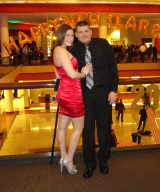

Hi! My name is Jason Chodera. Welcome to my website! I live in Columbus, OH with my wife of 3 years, Carrie (pictured right).

I Have Lots of Pets!
The odd looking cat below is Little Kitty. She's not so little anymore, but she still acts like a ktten so the name stuck.


Inside the Kitchen
Smells Like Bakin' started out in the garage of the husband wife duo Allison & Joseph. Allison is the baker, and Joseph found a way for them to make a business out of her tasty treats. Flash forward to today and they have a successful store front, catering business and cupcake truck.
Get Bakin' with US
Call us: 1-555-CUP-CAKE
Email Us: bakeon@smellslikebacon.com,
We announce all of our new flavors first through Facebook & Twitter, and even take requests!


© 2012 Smells Like Bakin' Cupcake Company. All Rights Reserved.